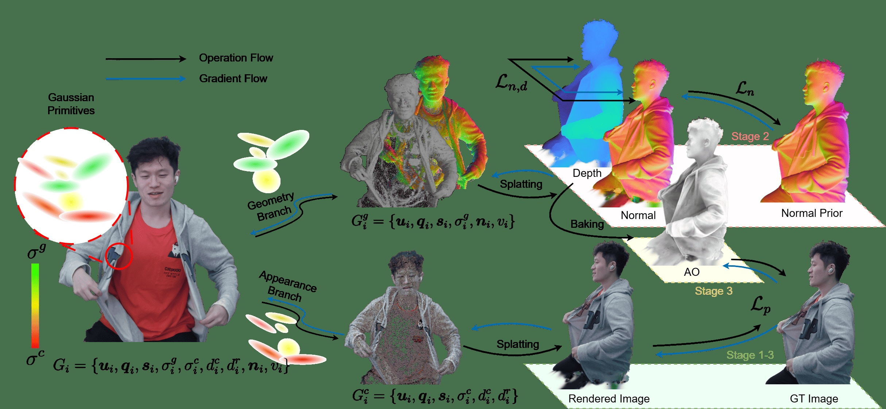

Recent advances in novel view synthesis have been greatly accelerated by the efficient, photorealistic rendering capabilities of 3D Gaussian Splatting (3DGS), bringing volumetric video technology closer to practical adoption. However, to fully realize the capabilities of 3DGS-based volumetric video, enhancing its geometric fidelity and relighting performance remains a critical challenge. In this work, we demonstrate that a controlled disentanglement of geometry and appearance modeling in 3DGS mutually enhances both aspects, leading to optimized convergence. Motivated by this observation, we propose a novel disentangled 3DGS representation that introduces a disentangling factor to regulate the interaction between geometry and appearance. Combined with well-designed pruning and densification strategies, our method improves performance in both novel view synthesis and surface reconstruction. We incorporate normal and visibility as additional Gaussian attributes, optimized in a staged manner, enabling high-quality relighting through a deferred shading pipeline. Furthermore, we extend our framework to the temporal domain, incorporating customized optimization strategies to produce temporally stable volumetric videos with relighting capabilities. Extensive experiments on both custom and public datasets demonstrate that our approach achieves competitive results in rendering quality and geometric reconstruction compared to existing methods.

Overview of our disentangled 3DGS framework. We introduce separate opacity fields for geometry and appearance, accumulating them independently during splatting via a disentangling factor that regulates their interaction. Normal and visibility are incorporated as additional Gaussian attributes, optimized in a staged manner. A deferred shading pipeline enables high-quality relighting by decomposing environment lighting and Gaussian PBR attributes. The framework is extended to dynamic 4D scenes through deformation and refinement stages with temporal regularization, producing stable volumetric videos with relighting capabilities.
@inproceedings{10.1145/3757376.3771406,
author = {Zhou, Yifeng and Zhang, Chao and Wang, Shuheng and Li, Wenfa and Yi, Xu and Wang, Degang and Chen, Yuzhong and Jiao, Shaohui},
title = {Disentangled Gaussian Splatting: High-Fidelity Relightable Volumetric Video through Geometry-Appearance Decoupling},
year = {2025},
isbn = {9798400721366},
publisher = {Association for Computing Machinery},
address = {New York, NY, USA},
url = {https://doi.org/10.1145/3757376.3771406},
doi = {10.1145/3757376.3771406},
booktitle = {Proceedings of the SIGGRAPH Asia 2025 Technical Communications},
articleno = {27},
numpages = {4},
series = {SA Technical Communications '25}
}